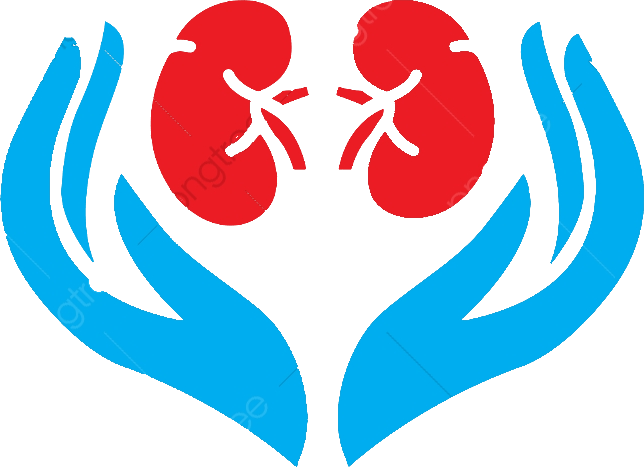

<div class="container">
    <div class="sidenav">
      <div class="sidenav__top">
        <div class="sidenav__img">
          
          <!-- <span class="text">T<span class="small">T</span></span> -->
        </div>
        <div class="sidenav__menu">
          <a routerLink="messages" routerLinkActive="active" class="item">
            <i class="item__icon far fa-envelope"></i>
            <span [class.opened-text]="opened" class="item__text">Messages</span>
          </a>
        </div>
      </div>
      <div class="sidenav__controller">
        <!-- <i class="icon far fa-angle-right"></i> -->
        <button (click)="toggleSidenav()" mat-icon-button aria-label="Button to toggle sidenav">
          <i *ngIf="!opened" class="icon far fa-chevron-right"></i>
          <i *ngIf="opened" class="icon far fa-chevron-left"></i>
        </button>
      </div>
    </div>
    
    <div class="body">
      <mat-progress-bar class="body__progress" *ngIf="routing"
        mode="indeterminate"></mat-progress-bar>
      <app-page-header [title]="title" (logoutClicked)="logout()"></app-page-header>
      <router-outlet></router-outlet>
    </div>
  </div>